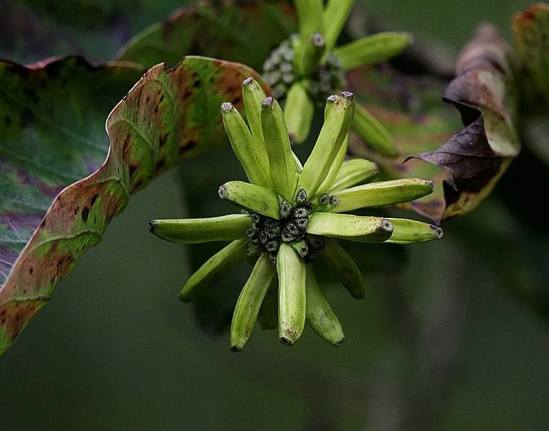

乔木 · 植物界
喜树 Camptotheca acuminata

蓝果树科喜树属落叶乔木，中国特有树种，全株含喜树碱，是提取抗癌药物的重要原料，被列为国家二级保护植物。
- 分类
- 门被子植物门纲木兰纲目山茱萸目科蓝果树科属喜树属
- 栖息环境
- 海拔 1000 米以下的溪边、沟谷与林缘，喜温暖湿润
- 地理分布
- 中国江苏、浙江、江西、湖北、湖南、四川、云南、广东、广西等地，为中国特有
- 保护级别
- 国家二级重点保护野生植物；IUCN 暂无评估
物种志
喜树为蓝果树科喜树属落叶乔木，高可达二十米，树皮灰色，纵裂，小枝髓心白色。叶片互生，纸质，长卵形至披针形，先端渐尖，全缘或微波状，表面深绿，背面淡绿。头状花序顶生或腋生，花淡绿色，花期五至七月；瘦果狭长，聚生成球形的果序，成熟时黄褐色，果期九至十一月。
喜树是中国特有的单种属植物，分布于江苏、浙江、江西、湖北、湖南、四川、云南、广东、广西等地，多生于海拔一千米以下的溪边、沟谷和林缘。它喜温暖湿润和充足阳光，生长迅速，适宜深厚肥沃、排水良好的土壤。全株含喜树碱，是提取抗癌药物的重要原料；木材轻软，可制器具和造纸。由于天然资源有限，喜树被列为国家二级重点保护野生植物，各地已开展人工造林。
形态与习性
- 株高可达 20 m，树皮纵裂
- 花期5–7 月，头状花序淡绿色
- 果期9–11 月，瘦果聚成球形
- 光照喜光，幼树稍耐阴
- 水分喜湿润，常生于溪边
- 土壤深厚肥沃、排水良好
- 主要用途提取喜树碱，木材制器具
趣味知识
- 喜树全株含喜树碱，其衍生物是临床常用的抗癌药物之一。
- 它的果实聚成球形，成熟时像一个个小足球挂在枝头。
- 喜树生长迅速，十年左右即可成材，是优良的速生造林树种。